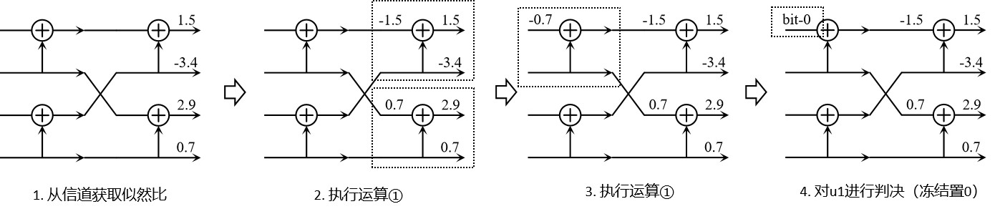
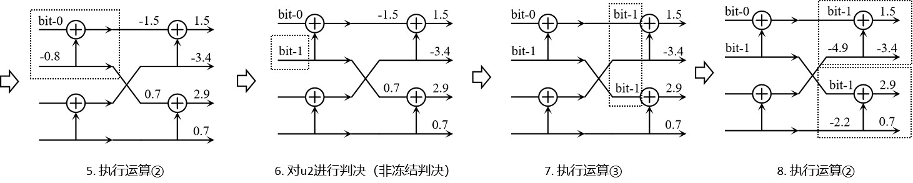
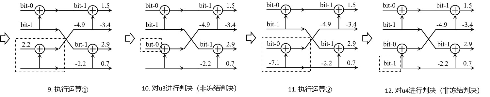

四、如何译码？#
1. 信道的输出信息#
在介绍极化码的译码算法之前，必须先建立关于“信道”这个数学对象的基本认知。例如，对于一个比特翻转概率为\(p\)的信道，如果在某次使用过程中，信道输出比特\(1\)，请问输入的原比特可能是多少？
解答：若记输入的随机变量为\(X\)，输出的随机变量为\(Y\)，那么根据Bayes公式：
我们实际是求条件概率：
其中\(x\in\{0,1\}\)。如果输入的随机变量\(X\)是均匀分布，那么上式将退化为比较简单的信道转移概率：
从数学上来讲，虽然信道只输出了一个比特\(1\)，但我们可以获取的完整信息远不止如此，结合我们关于信道的认知，可以进一步求出关于输入随机变量\(X\)的条件概率分布\(\Pr(X=x|Y=1)\)。显然这样一种“软”的结果包含了更多的信息，有利于获取更好的通信性能。在现代研究中，除了存在特殊的硬件限制外，我们将总是使用软译码策略。
极化码也存在比特翻转等硬译码算法，但性能不如LDPC，除理论研究外很少考虑。
为了令信道纠错码的译码器可以方便地获取Bayes条件概率，这部分计算负担往往由通信接收方的解调器承担，即执行所谓的“软判决”。对于二进制情况，我们定义对数似然比（Log-Likelihood Ratio）为：
不难发现，它是关于条件概率分布\(\Pr(X=x|\text{Some Condition})\)的充分统计量，在知道对数似然比后，我们可以立即计算\(x=0\)和\(x=1\)对应的条件概率，而不会出现混淆。出于这种良好性质，在许多二进制纠错码研究工作中，都会选用对数似然比描述它们的译码算法。
非二进制纠错码不存在似然比，只能使用条件概率分布进行译码。
2. 最小和SC译码#
为了尽量避免劝退的复杂公式，我们将首先描述最小和译码算法。该译码算法简单到令人怀疑其正确性，其设计初衷也是为了提高硬件计算效率。关于正确性的理论推导，将推迟到后续章节介绍。
2.1 码长为2的极化码#
码长为2的极化码结构如下图所示：

容易知道，其码率只有\(R=1/2\)一种，冻结位是\(u_1=0\)，发送端只能在\(u_2\)上传输信息比特。不论信道是翻转信道、擦除信道还是AWGN信道，我们总能在接收到\(y_1\)和\(y_2\)之后，计算对应的\(x_1\)和\(x_2\)的对数似然比，分别记作\(L_1\)和\(L_2\)，那么在已知信道的统计特征、以及\(y_1\)、\(y_2\)和\(u_1\)的值的条件下，比特\(u_2\)的对数似然比为：\(L_1 + L_2\)。
2.2 码长为4的极化码#
码长为4的极化码结构如下图所示：

当码长稍微增加一些时，事情突然变得十分复杂。即便预设一个固定的冻结集，比如令\(u_1=u_3=0\)，我们也难以将上述码长为2的情况直接推广到这里。比如，在已知\(x_{1:4}\)的对数似然比分别为\(L_{1:4}\)的情况下，没有手段求出\(v_{1:4}\)的似然比，也就无从谈起求\(u_2和u_4\)的似然比。我们需要对码长为2的极化码做更多的讨论。
2.3 码长为2的极化码（三种子运算）#
① 已知\(L^x_1,L^x_2\)，求\(L^u_1\)：\(L^u_1 = \text{sign}(L^x_1) \times \text{sign}(L^x_2) \times \min \left\{|L^x_1|, |L^x_2|\right\}\)
② 已知\(L^x_1,L^x_2\)和\(u_1\)的值，求\(L^u_2\)：\(L^u_2 = (1 - 2u_1) \cdot L^x_1 + L^x_2\)
③ 已知\(u_1,u_2\)的值，求\(x_1,x_2\)的值：\(x_1=u_1+u_2,x_2=u_2\)
2.4 码长为\(N=2^n\)的极化码（连续消除规则）#
在定义了上述三种运算之后，我们进一步地规定一个译码顺序：连续消除（Successive Cancellation）。
具体来说，译码过程是从右到左逐层进行的，在每一层中，对所有码长为2的极化码子结构，都应当先执行运算①，然后再跳转到下一层，继续根据目前已知的似然比（数量已减半）递归地执行子运算①，直到计算到最左一层的\(u_1\)后，我们对它进行判决，得到一个确定的值，接下来就可以执行子运算②计算并判决\(u_2\)，然后我们根据这两个确定的值使用子运算③跳转到上一层。此时在这一层我们会获得一些更新后的值，使得我们可以执行子运算②。通过这样一种类似二叉树左序遍历的过程，最终可以实现完整的译码。
上面的叙述比较抽象，我们看一个具体的例子，在序列\(u_{1:4}\)中冻结\(u_1=0\)，其他位传输信息，则某次译码过程如下：



上面这个例子很容易推广到\(N=2^n\)码长情况下，不做赘述。至于连续消除规则背后的原理，它涉及极化码的根基，不可能在短篇幅内解释清楚，你在这里只需要强制认同它。如果你是深度研究者，推荐阅读Arikan曾提出的一种用于进行Slepian-Wolf编码的单调链极化码（Monotone Chain Polar Codes），其中采用了所谓的单调消除规则，或许可以开拓你的研究思路。
本手册的对应库中，plcoding.cpp_core.iterator中的PolarIterator对象支持任意顺序译码，可用于支持更深入的理论研究。